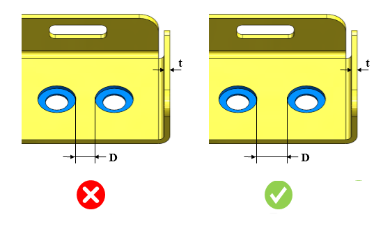

2つのざぐり穴のエッジ間の最小距離と板厚との比は、指定された値以上である必要があります。
1つのざぐり穴から別のざぐり穴までの距離が最小値を下回る場合、対象領域において板材の変形や割れが発生する可能性があります。
一般的な指針として、2つのざぐり穴間距離と板厚との比は、8.0以上であることが推奨されます。
DFMProは、パーツ上の2つのざぐり穴間の距離を特定し、距離と板厚の比を事前に設定された値と照合して評価します。
ユーザーは、デフォルトで設定されている値を編集することができます。
ルールUIでは、材料の一覧が Map Material から読み込まれ、ユーザーは材料およびその値を設定することができます。
材料とその値を設定した後、Ctrl+M コマンドを使用すると、ルールUI上で材料グループおよびグレードごとに設定された材料の一覧をフィルタ表示できます。同じキー（Ctrl+M）を使用してフィルタを解除できます。

ここでは、
D = ざぐり穴間の最小距離
t = 板厚
注記:
重なり合っている穴は解析対象外となります。